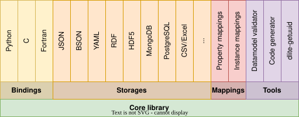
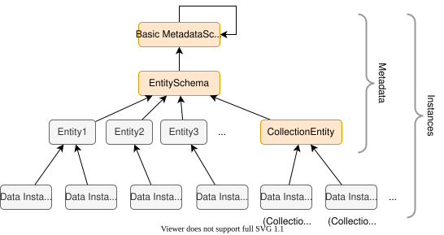
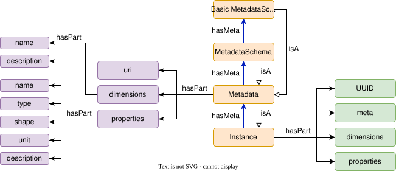

DLite Concepts#
DLite is a lightweight data-centric framework for semantic interoperability.
The core of DLite is a framework for formalised representation of data described by data models (also called metadata or entities). On top of this, DLite has a plugin system for various representations of the data in different formats and storages, as well as bindings to popular languages like Python, mappings to ontological concepts for enhanced semantics and a set of tools.
DLite is a C implementation of the SINTEF Open Framework and Tools (SOFT), which is a set of concepts and tools for using data models to efficiently describe and work with scientific data.
The main components of DLite are shown in Figure 1, including bindings to several programming languages, tools, the plugin framework for storages, and mappings.

Figure 1. DLite Architecture.
DLite contains a core library, implementing a simple, but powerful datamodel-based framework for semantic interoperability. On top of this, it implements a set of bindings, storages, mappings (using tripper) and tools. The library also comes with a set of interfaces (API) to create extensions and custom plugins.
DLite currently provides bindings with well-documented APIs to Python, C and Fortran. For C and Fortran it provides tools for code generation for easy and efficient integration into simulation software. The Python bindings are dynamic in nature and provide a simple way to interact with semantic data from Python.
It also provides a plugin architecture for storages and mappings and comes with a set of generic storages. The plugins can be written either in C or Python and are available in any of the bindings (including C and Fortran) due to the embedded Python interpreter.
The main approach to developing software with DLite is to incrementally describe the domain of the software using data models (see below). The data models can represent different elements of the software, and be used in handling I/O as well as in code generation and documentation. Data models can also be used for annotating data and data sets. This might be useful in cases where for instance the origin of the data, license and ownership are of importance.
Since any complex software will have many data models and often multiple instances of the same data model, DLite allows for creating collections of data models with defined relationships.
An important idea is that software may be written is such way that business logic is handled by the codebase, while I/O, file-formats, version handling, data import/export and interoperability can be handled by reusable components in the DLite-framework, thus reducing risk and development time.
Datamodel hierarchy#

Figure 2. Datamodel hierarchy. The instances colored orange are predefined, while the other may be defined by the user. Data instances 5 and 6 are what we normally will call a collection.
Figure 2 shows the datamodel hierarchy implemented in DLite. As a user, you will almost always deal with only data models or data instances, but the hierarchy gives DLite a strong and theoretically well-defined schema.
An instance in DLite is a formal representation of a dataset. It is called an instance, because it is an instance of a data model. This is similar to instances of classes in object oriented programming.
In DLite we often say that an instance is described by its data model (also called entity for historical reasons). The DLite data models are themselves formalised and described by their metadata. Hence, data models are instances, too.
Data models are instances of the EntitySchema. The EntitySchema is an instance of the BasicMetadataSchema, which is an instance of itself (meaning that it can be used to describe itself). Hence, in DLite everything is an instance. This has a practical implication that the API for instances can be applied to all data models as well. Since the BasicMetadataSchema can describe itself, no more abstraction levels are needed, making the DLite metadata schema complete and well-defined.
From Figure 2, one can also see that collections are simply instances of the CollectionEntity.
In DLite all instances that describe other instances (of a lower abstraction level) are called metadata.
Compared to ontologies, data instances correspond to OWL individuals while data models correspond to OWL classes. OWL, which is based on first order logic, does not have concepts corresponding to the higher abstraction levels of EntitySchema and BasicMetadataSchema.
A (so far unexplored possibility) with such a datamodel hierarchy is that it can enable cross-platform semantic interoperability between independent systems that describe their datamodel hierarchies using a common BasicMetadataSchema. Of course, this requires a common agreement on the BasicMetadataSchema.
Data models#
A data model contains information about the data that constitutes the state of the object it describes. The data model does not contain the actual data, but describes what the different data fields are, in terms of name, data types, units, dimensionality etc. Information about data is often called metadata. Formal metadata enables for the correct interpretation of a set of data, which otherwise would be unreadable.
An example of a data model is ‘Atom’, which can be defined as something that has a position, an atomic number (which characterizes the chemical element), mass, charge, etc. Another example of a completely different kind of data model can be a data reference-data model with properties such as name, description, license, access-url, media-type, format, etc. The first data model is suitable as an object in a simulation code, while the latter is more suitable for a data catalog distribution description (e.g. dcat:Distribution). Data models allows for describing many aspects of the domain. While each data model describes a single unit of information, a set of data models can describe the complete domain.
Uniqueness & immutability#
To ensure consistency, a data model (or metadata) should never be changed once published. They are uniquely identified by their URI, which has 3 separate parts: a namespace, a version number and a name. An data model named ‘Particle’ is unlikely to have the same meaning and the set of parameters across all domains. In particle physics, it would constitute matter and radiation, while in other fields the term ‘Particle’ can be a general term to describe a small inclusion or innoculant. For this reason data models have namespaces, similar to how vocabularies are defined in OWL. The version number is a pragmatic solution to handle how properties of a data model might evolve during the development process. In order to handle different versions of a software, the data model version number can be used to identify the necessary transformation (instance mappings) between two versions of a data model.
For example, the URI for the EntitySchema is
http://onto-ns.com/meta/0.3/EntitySchema, with
http://onto-ns.com/meta being the namespace, 0.3 the version and
EntitySchema the name.
URIs do not have to be resolvable, but it is good practice that they
resolves to their definition.
Data model semantics#

Figure 3. The DLite data model.
The DLite data model is defined by the Datamodel ontology and shown schematically in Figure 3. In orange we have the same hierarchy as shown in Figure 2, with instance as the most general concepts.
All data models and metadata have the following fields:
uri: URI that uniquely identifies the data model.
uuid: An UUID calculated as a hash of the uri. Used for database lookup.
meta: The URI of the meta-metadata that this metadata is an instance of. If omitted, it defaults to the entity schema, which describes data models.
description: A human description of the data model.
dimensions: Common dimension used for array properties.
properties: Descriptions of each of the underlying data properties.
relations: A sequence of RDF subject-predicate-object triples with additional documentation.
Properties describe data in terms of keyword-value pairs, dimensions enable efficient description of multi-dimensional arrays and relations can describe anything that can be represented in a knowledge base. Together they provide a general means to describe all types of data that can be represented digitally. Note however, that not all metadata uses all of these three ways to describe their instances. For example, data models have only dimensions and properties. Also note that dimensions and properties cannot have the same name, since they are accessed from the same namespace.
Dimension#
A metadata dimension simply provides a name and a human description of a given dimension of an array property.
Convention: For metadata schemata, should the dimension names start with an “n” followed by the name of a property how’s length is defined by the dimension. For example, the dimension that determine the number of properties in a metadata schema should be named “nproperties”.
Property#
A property describes an element or item of an instance and has the following attributes:
name: a name identifying the property.
type: the type of the described property, f.ex. an integer.
$ref: formally a part of type.
$refis used together with the “ref” type, which is a special datatype for referring to other instances.shape: The dimensions of multi-dimensional properties. This is a list of dimension expressions referring to the dimensions defined above. For instance, if a data model have dimensions with names
H,KandLand a property with shape["K", "H+1"], the property of an instance of this data model with dimension valuesH=2, K=2, L=6will have shape[2, 3].unit: The unit of the property.
description: A human description of the property.
Please note that dims is a now deprecated alias for shape.
Convention: If a metadata schema has an array property of type ‘dimension’,
‘property’ or ‘relation’, it should be named “dimensions”, “properties” and
“relations”, respectively. Their shape should be ["ndimensions"],
["nproperties"] and ["nrelations"], respectively.
Relation#
A RDF subject-predicate-object triplet. Relations are currently not explored in data models, but are included because of their generality. However, relations are heavily used in collections.
Identifiers#
Instances are uniquely identified by a universally unique identifier
(UUID), which is a 128 bit label expressed as a string of the
form xxxxxxxx-xxxx-xxxx-xxxx-xxxxxxxxxxx, where the xes are
hexadecimal digits in the range [0-9a-fA-F].
Since data models are a subclass of instances, as described above, they are also uniquely identified by their UUID. The UUID of a data model is calculated as a version 5 SHA1-based UUID hash of the data model URI using the DNS namespace (with an optional final hash (#) or slash (/) stripped off).
Furthermore, to allow identifiers to be used in triplestores, they can also be normalised to (potentially) resolvable IRIs. The columns in the table below list the three representations of identifiers. Any representation can be considered an ID, while normalised IDs are valid IRIs.
ID |
Normalised ID |
Corresponding UUID |
Note |
|---|---|---|---|
uuid |
ns / uuid |
uuid |
|
uri / uuid |
uri / uuid |
uuid |
|
uri |
uri |
hash of uri |
|
name |
ns / name |
hash of name |
experimental, before v0.6.0 |
name |
ns / name |
hash of ns / name |
experimental, v0.6.0+ |
Explanation of the symbols used in the table
uuid is a valid UUID. Ex: “0a46cacf-ce65-5b5b-a7d7-ad32deaed748”
ns is the predefined namespace string: “http://onto-ns.com/data”
uri is a valid URI with no query or fragment parts (as defined in the RFC 3986 standard). Ex: “http://onto-ns.com/meta/0.1/MyDatamodel”
name is a string that is neither a UUID or a URL. Ex: “aa6060”.
Note
The support of name IDs is considered experimental!
The way a UUID is calculated from an ID of the form of a name was changed in version 0.6.0.
The reason for this change is to ensure that the same UUID is obtained, regardless of whether it is calculated from the name or its corresponding normalised ID.
The behavior can be controlled with the namespacedID behavior.
Any ID can uniquely be converted to a normalised ID and any normalised ID can uniquely be converted to a UUID. Most importantly, using a normalised ID or UUID as an ID will result in the same corresponding UUID.
Going back is also possible. A UUID can be converted to a normalised ID (ex: uuid -> ns / uuid) and a normalised `ID can be converted to an ID (ex: uri -> uri). However, these conversions are not unique.
The id form is convenient for human readable identifiers. But please note, that such id’s must be globally unique. it is therefore recommended to use normalised IDs instead. These are also valid IRIs and can be used knowledge bases.
The tool dlite-getuuid can be used to manually convert URIs to their
corresponding UUIDs (or normalised IRI).